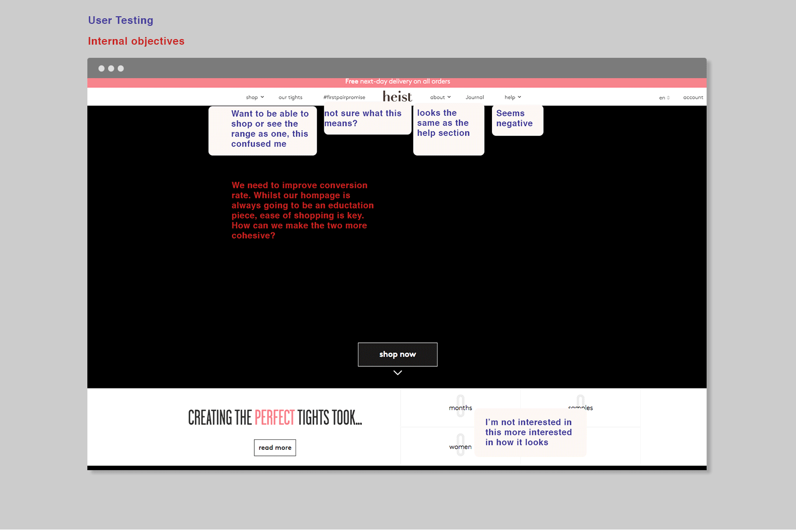
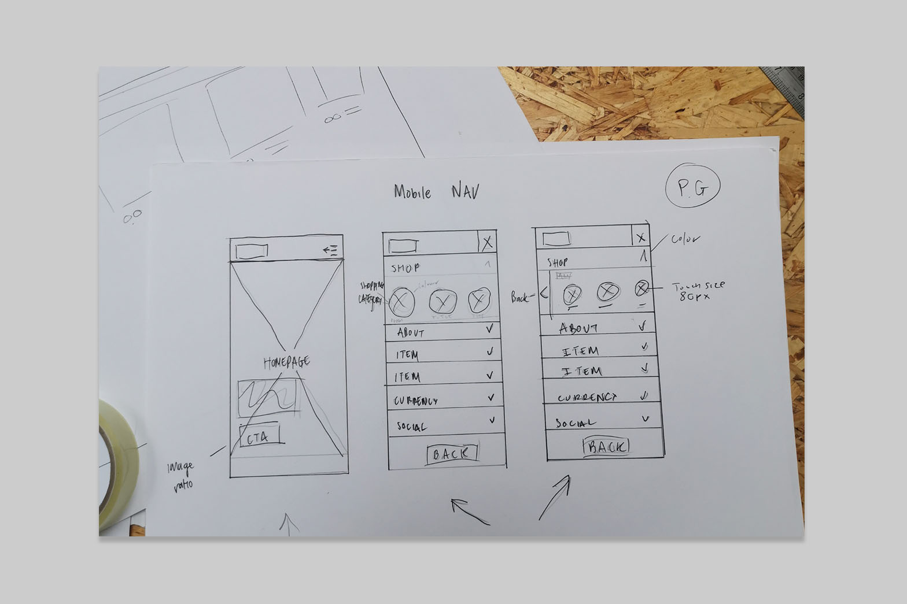
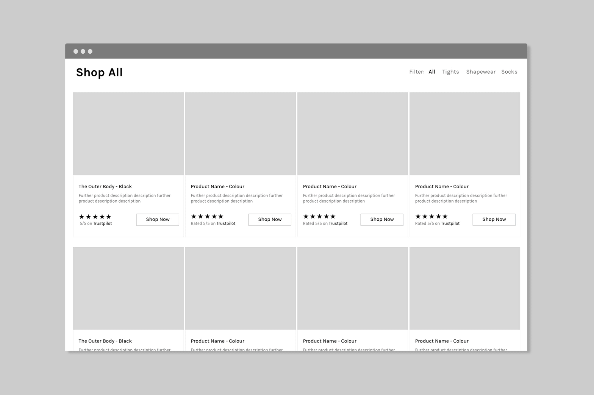
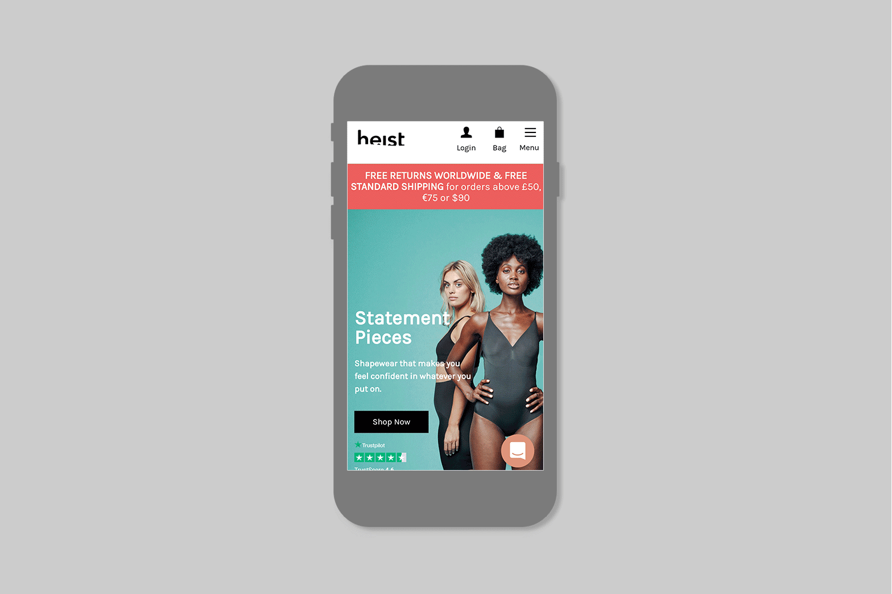
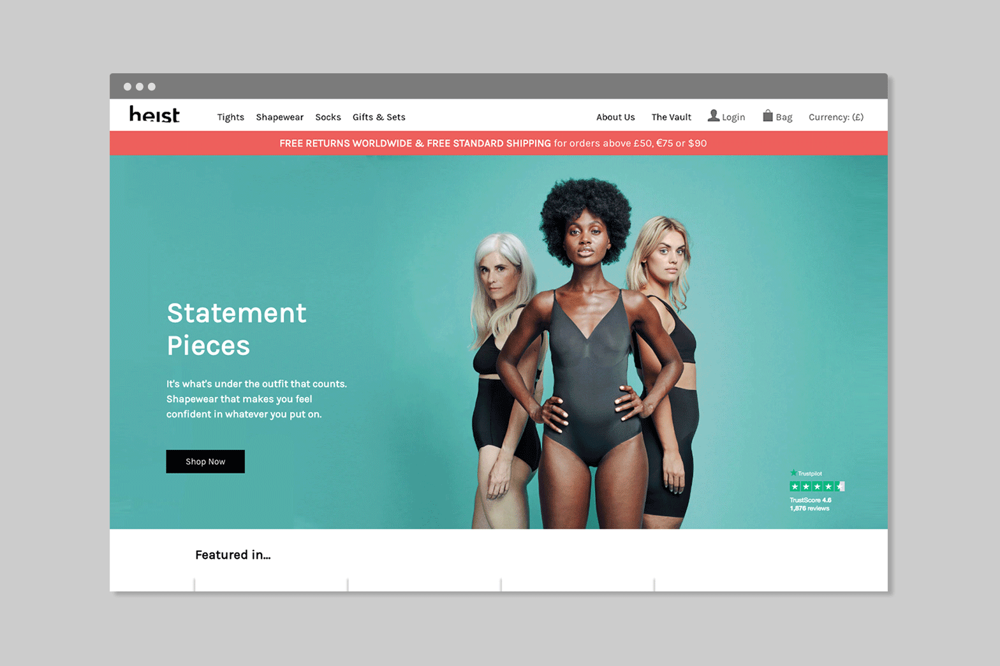
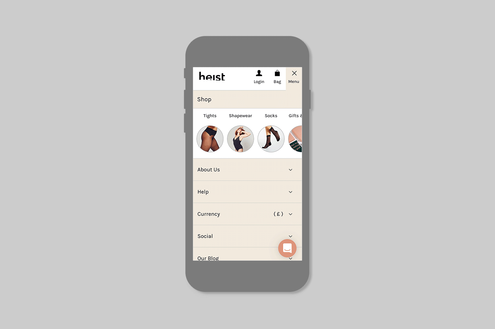
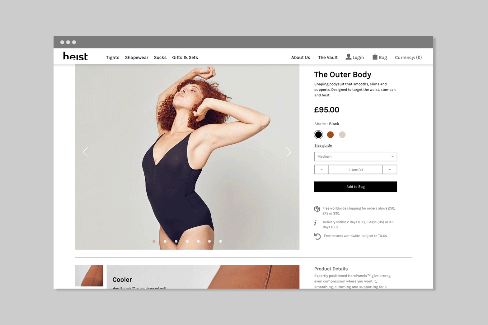

I was the UX designer on a site redesign for Heist. They’d just engaged an agency who created new brand guidelines. I worked closely with the creative director to translate these for web.
UX
UI
CMS

The Previous site
Objective
The goals were to simplify the shopping experience, increase mobile conversion, and introduce a new design system. Priorities included surfacing reviews and making customer support easy to find. The site was re-platformed to BigCommerce, with regular check-ins across internal and external engineering teams. The project was delivered in three months.
Research insights
Exploratory research with a small group of users highlighted several pain points in the shopping experience. People found it hard to tell the difference between gifting and student pricing, and were confused by the shopping list pages and overall navigation. The homepage didn’t feel cohesive — the brand and the shopping experience felt disconnected. Most users said they valued customer reviews more than press mentions. These findings echoed what we were seeing in the analytics: high drop-off rates and low mobile conversion.
Site Architecture & Wireframing
I began by mapping out a new site architecture, organising the experience into three key pillars: E‑commerce, Brand, and Content. This structure helped shape the design strategy and defined the three core product areas to wireframe and prototype. It also clarified how to categorise shopping pages and where to place reviews, help, and customer service. Wireframes focused on creating a simple, mobile-first shopping experience, underpinned by a clear site structure and reusable CMS templates. Key pages, including navigation, footer, shopping lists, and product pages, were wireframed using consistent, tested layouts.

Wireframe: Hand Sketch

Wireframe: Low Fidelity
User Research and Split Testing
Given Heist’s limited user testing budget, we adopted a mixed-methods approach. This involved moderated interviews with team members to gain detailed insights, alongside rapid unmoderated testing with a small group of friends and family who provided broader feedback via a questionnaire on their online shopping experiences. Additionally, two product pages underwent A/B testing to evaluate conversion rates, user engagement (measured by session times), and page load performance.
Final UI

Homepage: 📱

Homepage: 🖥️

Navigation and Product: 📱

Navigation and Product: 🖥️
📊 Outcome & Impact
In the first three months post-launch, conversions increased by 6-7%, pages loaded about 12% faster, and bounce rates fell by 20%. Source BigCommerce